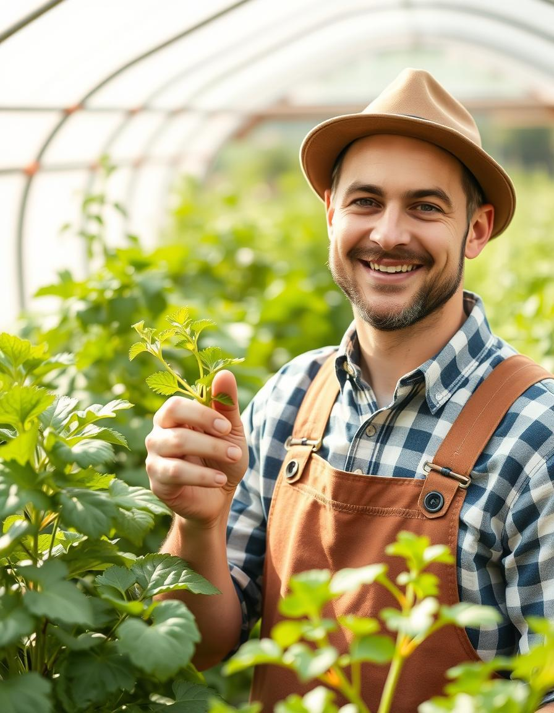

Впервые в Кыргызстане
Фермеры отмечают быстрый и заметный рост растений с применением Hydrowoolks KG
3 дня до результата
Видимый эффект уже через 3 дня после первого применения в открытом грунте и теплицах.
Разнообразие культур
От клубники и винограда до зерновых — эффективность подтверждена на разных культурах.
Реальные отзывы
Фермеры делятся результатами в соцсетях и отзывах.
